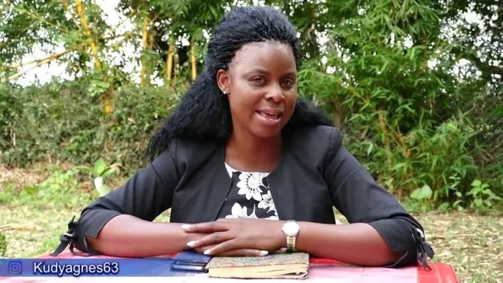
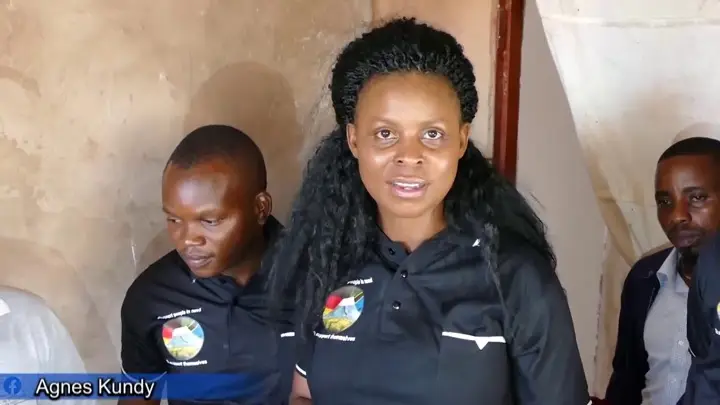
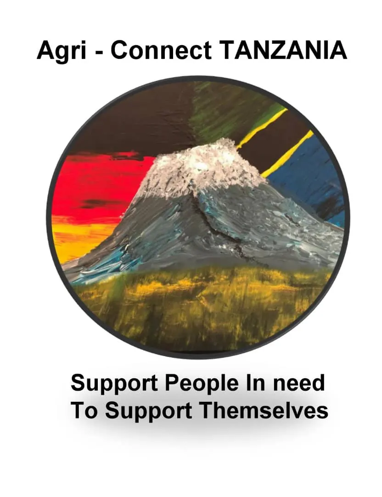
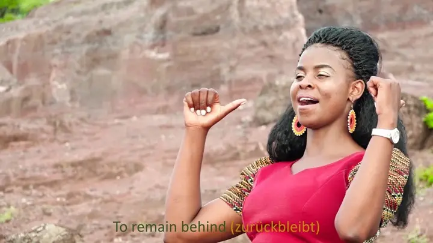
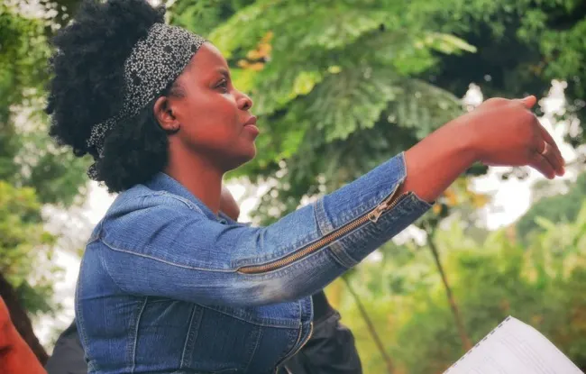
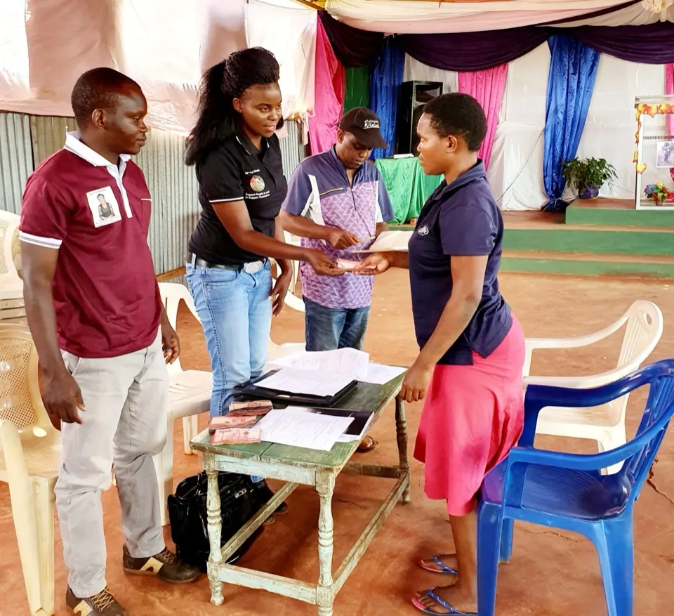
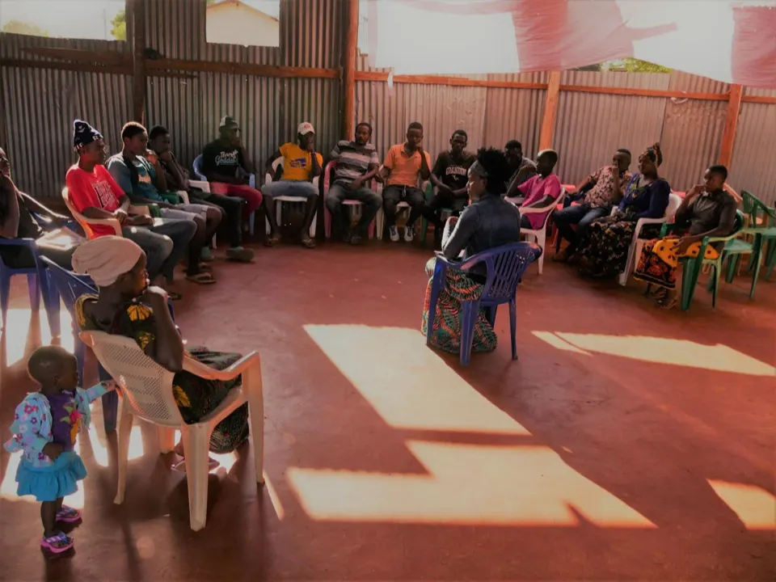

Agri-Connect Tanzania
Agri-Connect Tanzania
The idea its time has come...

Opens YouTube in a new tabNEW AND CREATIVE WAYS & TECHNIQUES FOR SELF EMPLOYMENTS TO YOUNG PEOPLE
FIRST STAGE: KIJANA KUJIWEZESHA
SECOND STAGE: VIJANA KUWEZESHANA &
THIRD STAGE: VIJANA KUWEZESHWA
-Mindset changing-
-Capacity building-
-Material Provision-
Community Development is possible...
"If we can all "STAND TOGETHER" in supporting one another, to have all of us and all people in all communities, societies, countries & continents, to be: thinking positive; creative in employing our/their environment safely, positively & productively; independent, knowing what to do and do them accordingly & efficiently: definately "COMMUNITY DEVELOPMENT" can and will be achieved where it is not yet achieved: THUS, the world becomes a better place for everybody to live" (Agnes Link)

Opens YouTube in a new tabSupport youth to support themselves

Why Agri-Connect TANZANIA
Addictions, alcoholism, drug abuse, hanging arround in the streats has become a reality of their daily life . Some of them hope for a better future in other countries which results in family separation, the need to adjust to new cultures and languages.
A lot of time and efforts is wasted, which could have been invested in creating a better future in their home lands.
As a solution we have established non governmental organization (NGO) called Agri-connect Tanzania. Our Goal is to support people to support themselves; by creating a sustainable environment, we give people possibility to stay productively and live a fulfilled life at home.
Agri-Connect Tanzania has a Special Song TO Unite Youth and all other groups in the Community
The Song's lyrics is translated in three languages; Kiswahili, English & German
|PAMOJA KWA UMOJA | TOGETHER IN UNITY | ZUSAMMEN IN EINHEIT|

Opens YouTube in a new tabThe song is written and sang by Agnes Link, and it was produced purposely to Unite Youth and other groups in the community. The song was released officially on YouTube Agri-Connect Tanzania and On AgnesLink channel on 25.10.2019, as an Audio.
The video shooting was done in Kilimanjaro Region in Tanzania on 30&31.10.2019, and was officially released on Youtube on 18th March 2020. Youths from two groups volunteered to be part of the video.
Everywhere and every time Youth under Agri Connect Tanzania meet, they sing this song "PAMOJA KWA UMOJA" together. The song carries the vision of the idea of supporting youth. The idea that started easily as just an idea but today it is an NGO with lots of impacts to many people already.
Support me to reach those who are not yet reached

Another reason why you can invest in supporting me......
"Reach those who are not yet reached" is the main project Model A-CT is using in supporting people in need to support themselves. Agri-Connect Tanzania targets to reach people who havent been reached yet until we see their lives change FROM one stage to another. Some people are not yet reached because of many reasons, their Location, their life status could be one of them.
Agri-Connect Tanzania believes:
- There are many talented youth in the villages and are not yet reached.
- There are youth who are ambitious to live good life, to work hard but they have no means, they have no knowledge, they are not capable on creativity in employing themselves arround their environment. Agri-Connect Tanzania aims to reach them.
- There young people who are already in worldly addictions like alcoholism, hopelessly hanging arroung in the streets, no body wants to even come near them because they are dirty smelling bad etc. Agri-Connect Tanzania is determined to reach and support them to the point they can support themselves. It is already happening and it is not easy because we need resources in terms of money in making all these possible. We need to travel there and accordingly taking the groups into the process of being supported to support themselves. Your support is highly needed and highly appreciated
Why you should be part of supporting this mission
We are all potential, we all have something to give, we can all learn from each other, we can support each other.
We all have something to give and it is always worthy to give in supporting others.
In order to achieve this vision aiming for community development it is important all of us to invest on young generation. As Agri-Connect Tanzania we invest as much as we can more on research and trainings.
"Nobody has so much enough to give; equally as nobody has completely nothing to give. We all have something to give" (Agnes Link)
The challenges of young people is more psychological, behavioral, mental and then physical. It needs an intelligent strategy to bring them back to the positive thinking, appreciating life. And those who are already in life addictions need transformation process that will help them back to their normalities.
We can stand together and support this. We need each other. It needs, seminars and workshops. it needs rehabilitation service for those who need transformation process.
The challenge of our young generation is a challenge of our community and we can all be part of its solution. Be a support to this mission.
Please you are welcome to support me in this big vision that aims to support the community.
How we support
After young people are taken into process of creativity and be clear on employing themselves arround their environment, those who have identified what they like to do, what they can do and start doing it; Agri Connect Tanzania through its Micro credit programme, provides micro-credits which is requested and it is given in cash. This has started already and the feedback in returning the money to keep the rotation of going to other young people is so far positive. Example on 2nd November 2019 micro credit was provided to 10 small projects in Tanzania to be returned in 6 months. And now some of them has returned and are asking for more loans that they want to expand their production. This is what is needed, to see young people working and being responsible and independent. In the period of January and March 2020 three more groups were given micro credit in different ammount as it was requested. .
The idea is so far working positive and it is predicted to keep working. Knowing it is a big challenge to do micro credit with poor community, Agri Connect Tanzania is determined to work directly with young people in making sure they work the credits accordingly and they produce and make surplus that they not only pay the loans but also their lives are improved.
Trainings, seminars, workshops & meetings
We invest in mindset changing to build up Capacity among Youth in groups. By doing seminars, trainings, workshops and youth meetings. We also support and guide youth to share and learn themselves in groups following the directory Mannual prepared by Agri-Connect Tanzania. all focusing on practical education and experience. Among the sources where the practical experience comes, experience from young people themselves is also highly considered.


Resources support
After capacity biulding, young people became creative and know what they can do and start working on opportunities arround them. This is the stage Agri connect Tanzania supports through resorces provision in terms of money. It is done through Micro-credits according to the project rules and regulations. So far the analysis shows it is working good and many lives are impacted towards improvements.